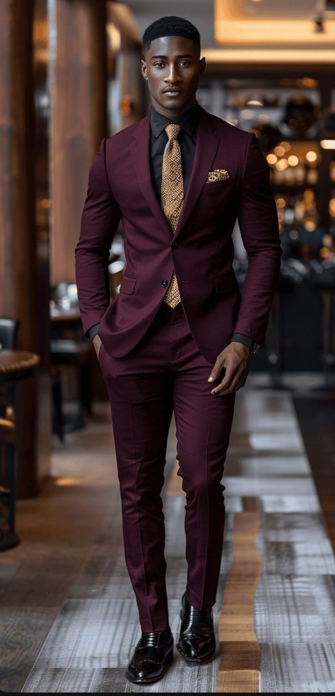
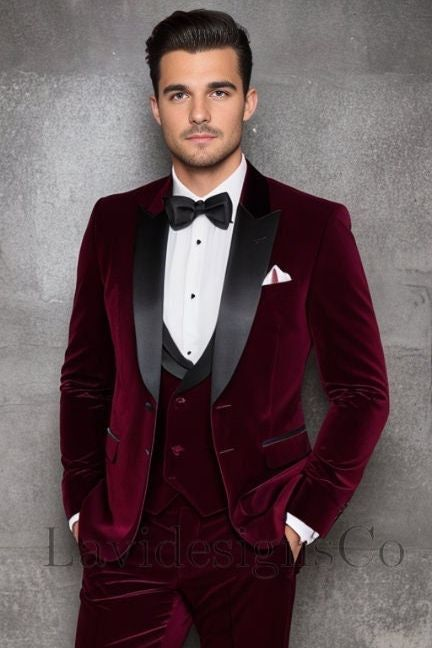
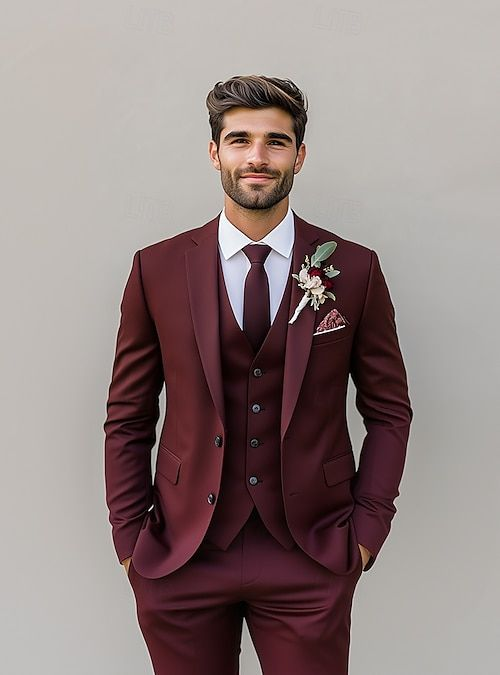

There’s something undeniably powerful about a man in a red suit. It’s more than just clothing—it’s a statement of confidence, individuality, and controlled boldness. Whether you’re attending a gala, wedding, or black-tie event, a well-styled red suit makes you unforgettable without screaming for attention.
But how do you wear red formally without looking like you’re trying too hard? What shades work best? And how do you accessorize for maximum sophistication? Let’s explore how to master the art of formal red suiting.
Why a Red Suit is the Ultimate Power Move
1. Command Attention (the Right Way)
Red naturally draws the eye, but in deep tones like burgundy or wine, it does so with elegance rather than flash.

2. Versatility Beyond Expectations
From weddings to awards nights, a red suit adapts through fabric choice and styling—velvet for winter galas, lightweight wool for summer weddings.
3. Timeless Yet Contemporary
Historical figures from Prince to modern icons like Timothée Chalamet have proven red’s enduring appeal in menswear.
The Psychology of Wearing Red Formally
What does a red suit communicate in formal settings?
- Confidence Without Arrogance – When properly tailored, it says you’re comfortable standing out without needing validation.
- Sophisticated Edge – Unlike safe navy or black, red suggests creativity and independence.
- Memorable Presence – In a sea of dark suits, you’ll be the one people remember.
Choosing the Perfect Formal Red Suit
Not all red suits work for formal occasions. Here’s how to pick the right one:
-
The Burgundy Business Suit


Credit: Marlon Parker Best for: Business formal events, winter weddings
Fabric: Fine wool or wool-silk blend
Pair with: Crisp white shirt, black oxfords, silver tie -
The Velvet Dinner Jacket

Credit: LaviDesigns'Co Best for: Black-tie optional events, holiday parties
Fabric: Luxe velvet with satin lapels
Pair with: Black tuxedo pants, bow tie, patent shoes -
The Wine-Colored Wedding Suit

Credit: Fashion Trends Daily Best for: Grooms or wedding guests
Fabric: Lightweight wool or linen blend
Pair with: Ivory shirt, floral tie, brown oxfords


Formal Styling: The Do's and Don'ts
Elevate your red suit with these pro tips:
- Do: Anchor with neutrals—black, white, gray, or navy accessories keep it refined
- Don't: Wear bright red shoes or belts (stick to black or brown leather)
- Do: Experiment with textures (silk ties, velvet shoes, cashmere coats)
- Don't: Over-accessorize—let the suit be the statement
Celebrity Inspiration Done Right
These stars nailed the formal red suit look:

Credit: Bobby Avila

Credit: Bobby Avila
Final Thoughts: Own Your Red Suit With Confidence
A red suit isn’t just clothing—it’s armor. When worn with intention and proper styling, it communicates confidence, individuality, and sophistication that a basic black tuxedo simply can’t match.
Remember: The key is in the details. Choose the right shade for the occasion, keep accessories refined, and most importantly, wear it like you mean it. Because in a world of safe fashion choices, the man in the red suit is the one who leaves a lasting impression.
Loved this post? Share it with a friend who needs red suit inspiration! 👔❤️